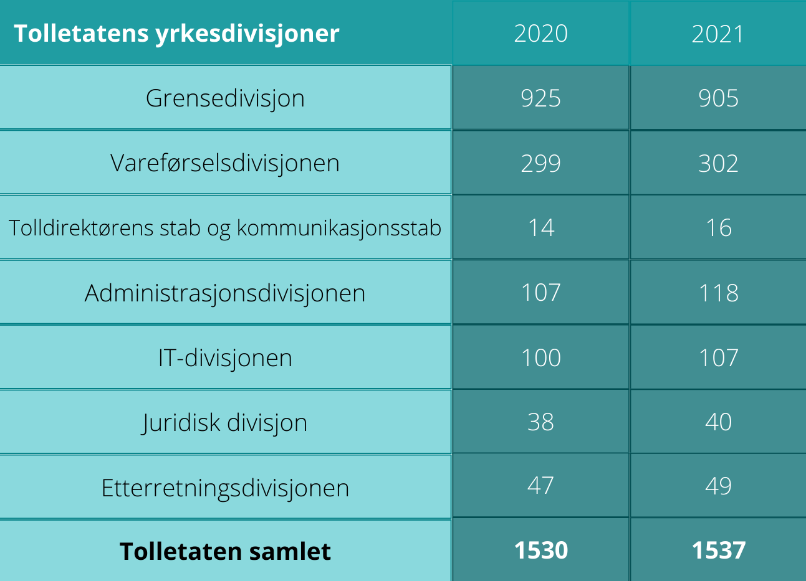

På bakgrunn av endring i utdanningen til tolleryrket har det oppstått en stor bemanningsmangel på Svinesund tollstasjon. Dette har ført til at tollerkvoten er overskredet. Det er for få tollere til å kunne utføre en god jobb med å holde ulovlige produkter utenfor Norge, og fremdeles få inn nødvendige varer fra alle land. Vi har tatt en prat med en som står midt i det, på Norges største grenseovergang.
I Hurdalsplattformen for 2021-2025 står det:
Styrkje det strategiske og operative samarbeidet mellom tollvesen, grensemyndigheiter og lokalt politi i grenseområda og styrkje tollvesenets operative bemanning.
Skal vi tro medieoppslag om at ansatte i tollvesenet slutter, og det er for få tollere i Norge nå, taler det mot at punktet i Hurdalsplattformen ikke gjennomføres som det blir lovet. Vi har tatt en prat med en som står midt i det, på Norges største grenseovergang.
Kine Steen, tollinspektør på Svinesund. Hun startet å jobbe på Svinesund i 2010.
En toller jobber med både å ta imot og behandle transportdokumenter av varer som skal inn i landet og kontrollerer biler og lastebiler, samt kjører blålys og spaner.
Kine Steen. Foto: Tolletaten
Kreative løsninger
Gjennom 12 år som tollinspektør har Steen kontrollert mange biler som er fylt opp med mye varer som har vært forsøkt skjult. Mange av disse er konstruert for å kunne lure tollerne. Bensin og diesel tanker som ikke nødvendigvis er fylt med drivstoff. Det lages luker og hemmelige rom som må åpnes med koder.
- Ingen vanlige folk hadde sett det hvis de hadde satt seg inn i den bilen, for det er så bra laget.
Kine Steen
Alt smugles
Det vanligste folk smugler er ifølge Steen tobakk og alkohol. Hun nevner også narkotika i stor grad samt våpen og penger.
Det smugles fra alle land. Steen opplever at det er mye bra beslag fra øst europeiske land. Hun nevner Drawsko Pormoskie i Polen som det har vært smuglet mye alkohol fra. Ellers er det også mye hasj fra Nederland, men hun sier samtidig at det ikke er noe fasit om hva slags varer som kommer fra hvilket land.
Bilkontroll. Foto: Tolletaten. Med tillatelse fra Tolletaten.
Smugling under koronapandemien
Steen sier at de merket stor forskjell på biltrafikken under koronapandemien, men at dette bare førte til at folk bare fant andre måter å smugle på. Varene skal inn uansett og det har vært tilfeller der det har blitt brukt blant annet fly, båt og droner. Det har også stoppet crossere gjennom skogen.
- Mange varianter og mye kreativt.
Kine Steen
Steen er bestemt på at det er ingen måte det ikke smugles på. Det som går ann, har blitt prøvd. Det er heller ingen aldersgruppe. Alt fra unge til pensjonister har blitt tatt.
Norges største grenseovergang
Svinesund er Norges største grenseovergang. Det er omfattende geografiske soner med grenseoverganger på E6, riksvei 118, og riksvei 22 som er Berby, Kornsjø og Holtet. Ifølge Steen tar det 40 minutter opp til overgangen ved Kornsjø med bil. Hvis de må kontrollere en bil der oppe kan det kan ta flere timer, uten at de nødvendigvis får et beslag.
Kart over grenseovergangene Svinesund tollsted har ansvar for.
For dårlig bemanning
For dårlig bemanning på tollstasjonene er et nyere problem, men har i det siste blitt belyst i media. Fredrikstad blad skrev blant annet en artikkel tidligere i år om at grensene så og si er åpne for smugling, på grunn av at det er for liten bemanning og kapasitet på tollstedene langs landegrensene.
I følge tollvesenets årsrapport er det 1537 personer ansatt i tollvesenet per 31.12.21, hvorav kun 905 av disse jobber i grensedivisjonen, altså fysisk på tollstedene langs landegrensene. I 2020 var det 925. Dette viser en solid nedgang på kun ett år, og ifølge artikkelen i Fredrikstad Blad er det forventet mer nedgang de kommende årene. Årsrapporten viser også til at det kun er en stigning med 7 ansatte på et helt år.

Antall ansatte per divisjon og staber i tolletaten. Hentet fra tolletatens årsrapport.
Mye støy
Steen kjenner på den store omorganiseringen i etaten, og mener det er mye støy å være toller for tiden. Hun begrunner dette med lønn, ledelse, turnus og politikk.
Grensedivisjonen er lavt bemannet. Mange har sluttet, og mange har gått av med pensjon. Tollerutdanningen ble bachelor belagt i 2021. Dermed rekker vi ikke å utdanne nye tollere innen mange har sluttet, selv om de er en viktig ressurs for landet vårt.
- Det er krise, vi er for få.
Kine Steen
Svinesund har måttet hente inn folk fra fengselet for å ha nok personer på jobb frem til det første bachelor kullet er ferdig utdannet. Disse personene går gjennom et intensivkurs før de begynner å arbeide på tollstedet.
- Det er bare pinlig, men når ledelsen ikke har forberedt seg på at det er så mange som går av med pensjon, blir det sånn.
Kine Steen
Stabile år
Tollvesenet har vært stabilt i mange år, og tidligere tjente tollvesenet bedre enn politiet. Siden det var så gode vilkår var det få personer som sluttet i tollvesenet. På grunn dårlig bemanning, lønnsutvikling som ikke har gått nevneverdig oppover den siste tiden og en dårlig seniorpolitikk, er det mange som nå har valgt å slutte. Steen nevner også at turnusjobbingen tar knekken på mange. Selv jobber hun hver 3. helg, netter, kvelder og røde dager. Det er svært få dagstillinger å oppdrive.
- Det blir nok bedre, men det er nok noen år til.
Kine Steen
Streik er umulig
Det skal veldig mye til for at tollere får lov til å gå ut i streik. Å sette selve kontrollen i streik ville gitt problemer i seg selv, men ekspedisjon som tar inn alle varene og deklarerer dem kan ikke det. Rundt 2000 trailere kjører gjennom Svinesund i døgnet, fulle av varer. Innholdet i trailerne er blant annet mat, blomster og varer til bygningsbransjen. Det bare renner inn, sier Steen. Det er kontinuerlig kø, til og med om natten. Samme trykk, sommer som vinter. En streik hadde ført til at alt stoppet opp og det ville blitt fullstendig krise.
- Norge hadde gått helt ned hvis vi hadde lukket igjen der.
Kine Steen